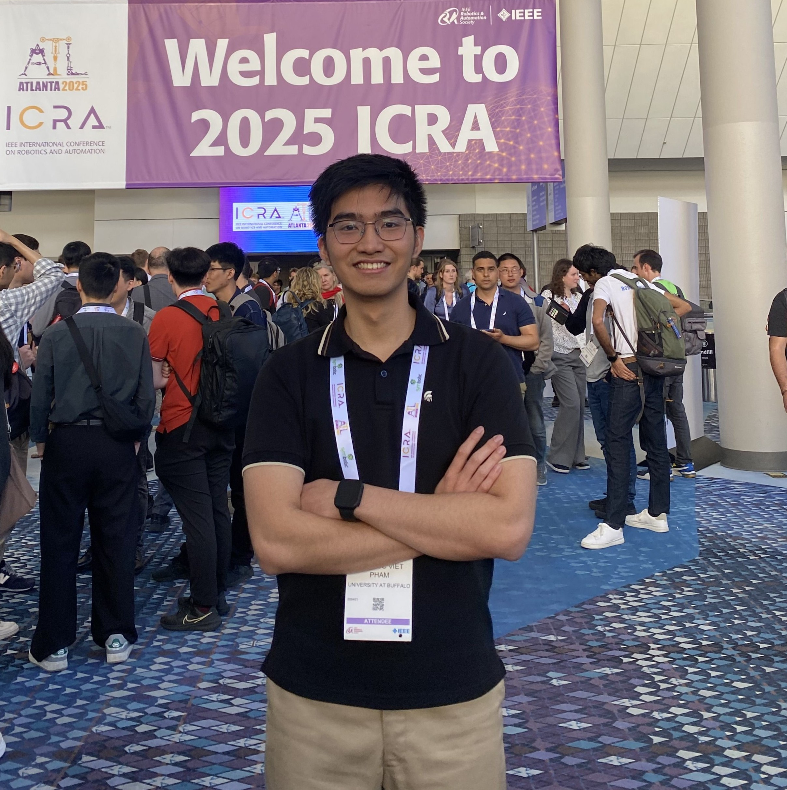

Hackathon.
Introduction

Le Quoc Viet Pham
I'm Viet, a senior studying Computer Engineering at the University at Buffalo (Class of 2027), with interests in robotics, embedded systems, and computer hardware.
I'm currently an undergraduate researcher in the Robot Form and Function Lab, where I design and study small-scale autonomous robotic systems. My current research is driven by a simple question: how can I design an insect-scale robot and how much could it accomplish with limited resources? At this scale, every milligram of weight, milliwatt of power, and byte of memory matters, making computation, sensing, communication, and autonomy challenging design problems.
After graduating, I hope to pursue a PhD at the intersection of robotics, embedded systems, and bio-inspired design, continuing to explore how small robots can achieve complex behaviors despite severe resource constraints.